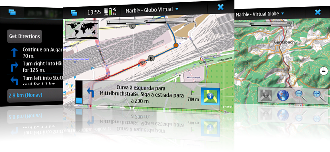

Marble is a Virtual Globe and World Atlas. It is part of the KDE Software Compilation and distributed under the terms of the LGPL, Version 2. Please visit the official Marble website for further information.
Marble on Maemo
We have set up the Marble Garage Project where Marble packages for the Nokia N900 are hosted. Please note that we will not use other Garage resources like mailing lists or bug tracking. Instead, please use the KDE equivalents. Links to them are collected on the Marble website.
News
| 2011-01-03 | Packages for 1.0 Release Candidate 1 are available for testers. Compared to Beta 2, some minor bugs are fixed and the user interface is further improved. The rendering speed is increased again. |
| 2010-12-08 | Packages for 1.0 Beta 2 are available for testers. Compared to Beta 1, some minor bugs are fixed and the user interface is further improved. The rendering speed is increased by 50%. |
| 2010-11-24 | Packages for Marble 1.0 Beta 1 are available for testers. |
| 2010-11-03 | The stable version Marble 0.10.3 is released. |
Maintained by the Marble developers.